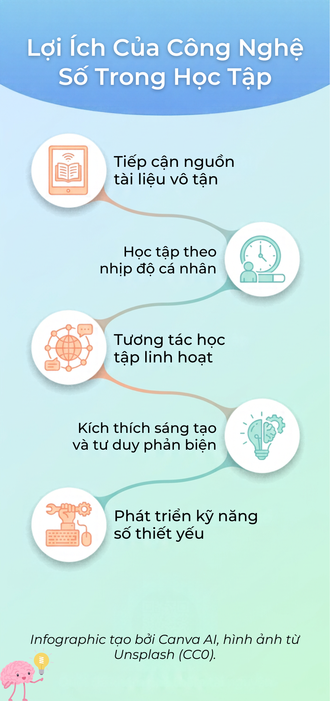

Infographic và video Nhiệm vụ 2.2
Infographic dưới đây tóm tắt nội dung bài học. Video YouTube cung cấp hướng dẫn thực hiện Nhiệm vụ 2.2.

Infographic dưới đây tóm tắt nội dung bài học. Video YouTube cung cấp hướng dẫn thực hiện Nhiệm vụ 2.2.
